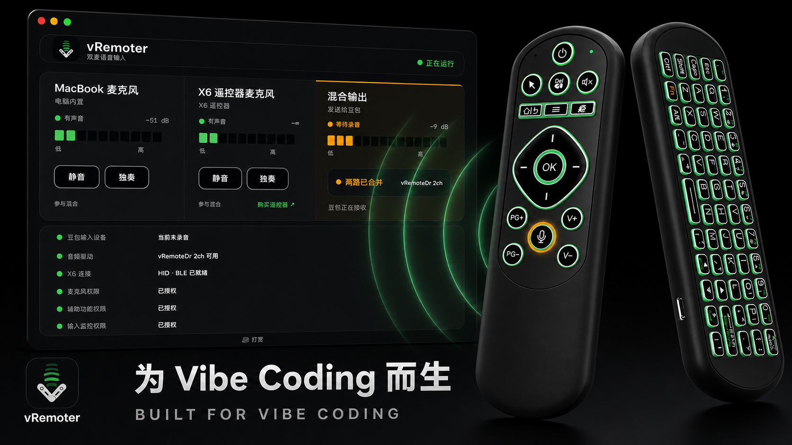
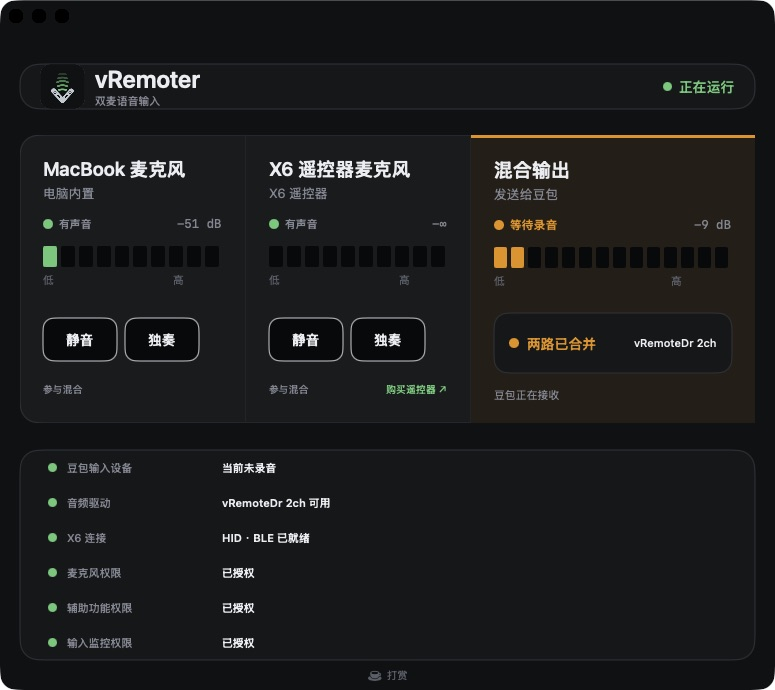
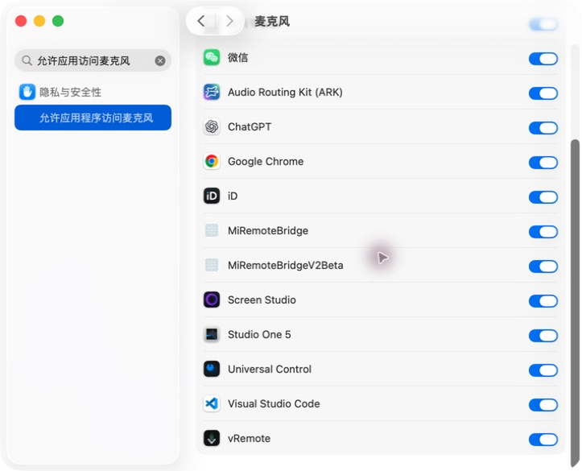
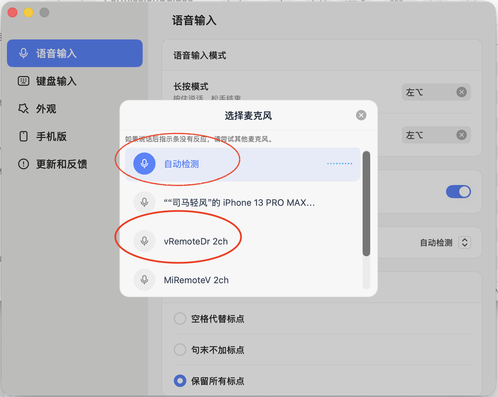

按下语音键
X6 唤起豆包录音，并打开遥控器麦克风。

vRemoter 1.0 · macOS
用 X6 遥控器的语音键控制豆包输入法，把遥控器麦克风和 MacBook 麦克风混合成同一个输入设备。离开键盘，也能继续说、继续写、继续改。
真实控制台
原生尺寸渲染的 macOS 控制台会实时显示两路麦克风电平、混合输出、X6 连接状态，以及每一项必要权限。只有状态异常时才出现处理按钮。

工作方式
X6 唤起豆包录音，并打开遥控器麦克风。
遥控器与 MacBook 麦克风进入 vRemoteDr 2ch。
录音停止，声音通道关闭，继续下一步工作。
首次设置
权限未完成时，先看对应截图，再由“立即设置”直接打开 macOS 的准确位置。豆包输入设备也有独立向导，避免权限全绿却仍然没有声音。




配套硬件
选择购买平台，用手机扫码或直接打开链接。
支持开发